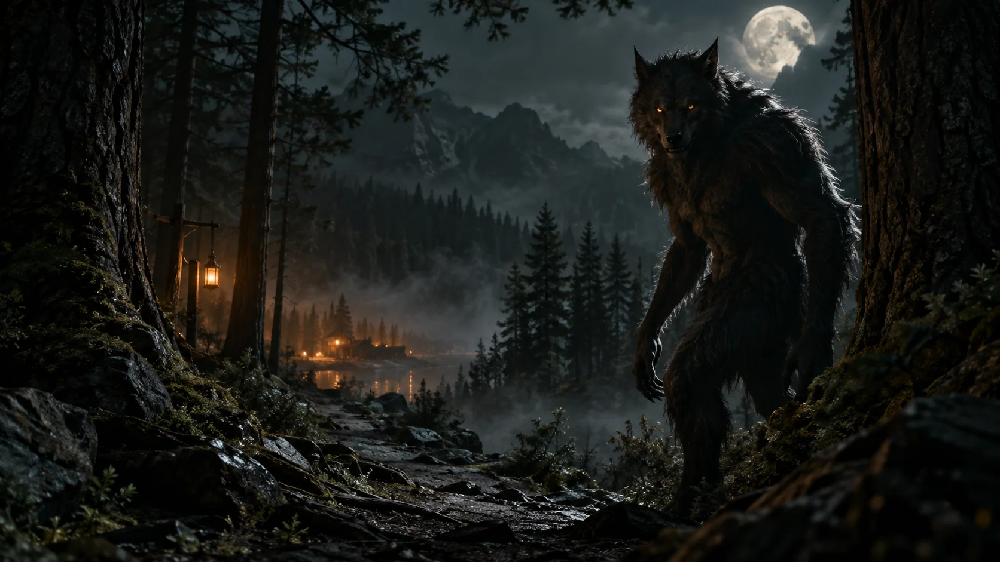

Spooky experiment
Find your way
Explore the night woods. Opt in to a werewolf encounter.

There’s something
in the trees.
Optional spooky experience: a werewolf reveal with a sudden change of imagery. Enter, explore with your pointer or arrow keys, then choose whether to investigate.

A good reason to check your inbox
Fresh thinking.
A little camp swag.
Useful ideas for the people moving higher ed forward. Preview the newsletter signup and your camp store thank-you.
A little camp magic
Your sample store pass.

DEMO-CAMPSample code · not redeemable. This previews the free-item campaign experience.
Explore the store ↗